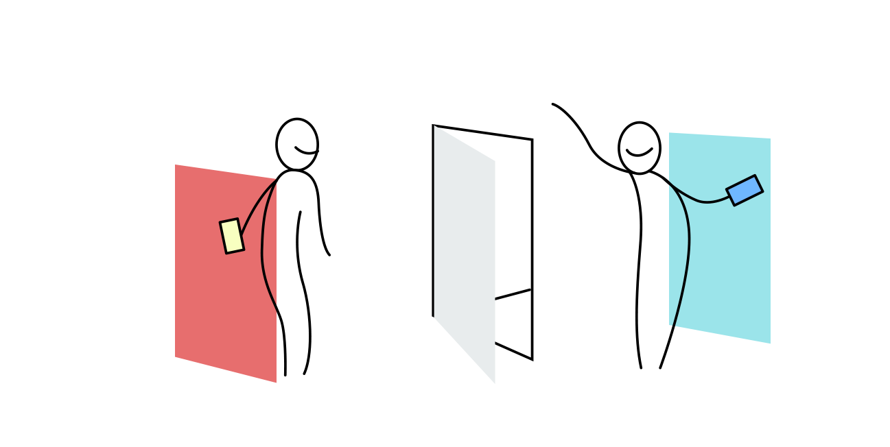
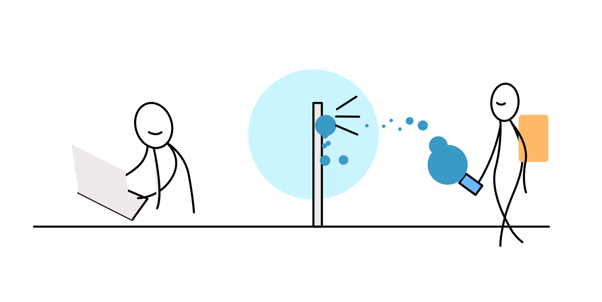

如果敲門可以超越空間、銜接更多情境時，會發生什麼事？If knocking can portal around dimensions, connect between scenes, what would happen?What knockkk believe
我們相信在這個世代，人能選擇新的互動方式、擁有新的距離情感。而敲門，是我們互動中最頻繁、最親近的互動之一。包含了未知的串連、情緒與腳步的轉換、甚至純粹的等待。記得你一天中敲過幾次門嗎？開了幾次門呢？如果這件事情可以超越空間、銜接更多情境時，會發生什麼事？
How it works
點擊 ＝ 敲門、滑動 = 開門。 當點擊時，對方的手機會「震動」。對方知道有人敲門後，可以「滑開」查看！以最簡潔的互動快速地，連接彼此。
tap = knock；點擊＝敲門 slide=check；滑開＝開門How to play
跟真實情境相同，你可以看到門，可以選擇「敲門」或「便利貼」張貼於室友的門上，或是貼一張「買垃圾袋」到家門上！「文字敲門」可以在敲門時附帶上訊息，可以是「幫忙開門」「起床」「要幫你買晚餐嗎」「打球」「在家嗎」，一旦送出敲擊後，對方的手機就會收到這則訊息。
Connect with city
每天的22:00~22:10我們會隨機發送三扇門，將與城市的另一端聯通！在十分鐘內，可以「拜訪」陌生門，也可以「被拜訪」！十分鐘後門就會消失，對話也會跟著消失。當人數越多時，我們越能發放給你在地、鄰里間的家門！
22:00-22:10 City Journey
knockkk's spirit

虛擬推向現實的媒介，讓每一次的互動都夾帶最真實的情感

全新的訊息存過濾，讓重要的人擁有最親近的互動媒介
Our story
我們分別來自台中、樹林、溫哥華的四個男生，收養了工作室下面的兩隻流浪貓MM，分別叫做「Monday」「Muse」讓他們定時療癒我們。目前住在玖樓的溫州、泰順公寓，祈禱免除兵役真的會到來，努力的在為智慧化、人性與科技之間鑽研，我們的第一個孩子是Fineighbor，企圖把合住生活透過舒適的方式處理訊息、累積訊息，進而轉化人的互動。沒有放棄Fineighbor喔！在某次會議時，誕生了這個knockkk的idea，預計用兩週把第二個小孩knockkk生出來！是設計師人生第二次寫的網頁，第一次跟另一位完全合作生小孩。是全團隊第一次用另一個角度努力。希望你們在用的時候，也會悄悄愛上敲敲。